Azərbaycan Premyer Liqası və ya Misli Premyer Liqası — Azərbaycanın peşəkar futbol klublarının çıxış etdiyi ən yüksək təbəqədir. Hazırda Misli Premyer Liqasında 12 futbol klubu iştirak edir. Azərbaycan Premyer Liqasının mövsümü adətən avqust ayından maya kimi keçirilir. Premyer Liqanın qalibi UEFA Çempionlar Liqasının 1-ci pley-off mərhələsində yer alır.
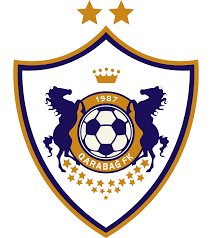
 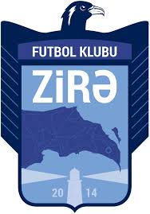
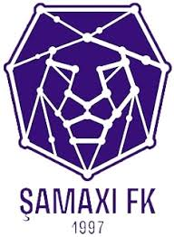
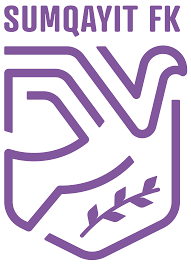
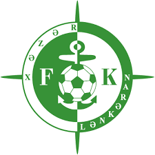
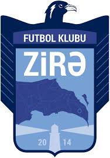
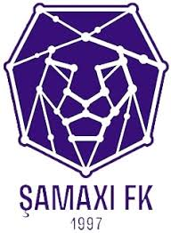
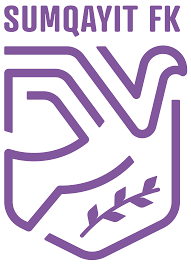
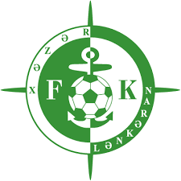
 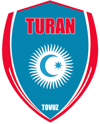
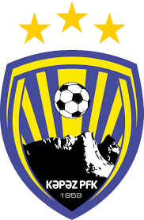
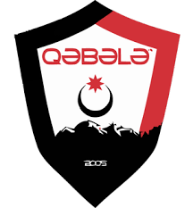
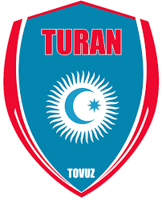
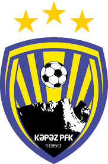
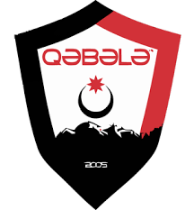
 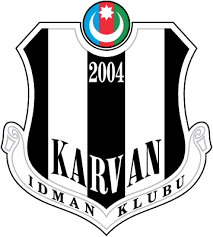
Çempionat 1992-ci ildən 2007-ci ilə qədər Yüksək Liqa, 2007-ci ildən sonra Azərbaycan Premyer Liqası adı altında fəaliyyət göstərir. 1992-ci ildən 10 klub Azərbaycan Premyer Liqasının qalibi olmuşdur. Azərbaycan Premyer Liqasının ən uğurlu komandası "Qarabağ"-dır. Hazırkı çempion "Qarabağ" 2024–25 mövsümündə 12-cu dəfə bu titulu qazanmışdır.
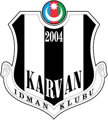
Çempionat 1992-ci ildən 2007-ci ilə qədər Yüksək Liqa, 2007-ci ildən sonra Azərbaycan Premyer Liqası adı altında fəaliyyət göstərir. 1992-ci ildən 10 klub Azərbaycan Premyer Liqasının qalibi olmuşdur. Azərbaycan Premyer Liqasının ən uğurlu komandası "Qarabağ"-dır. Hazırkı çempion "Qarabağ" 2024–25 mövsümündə 12-cu dəfə bu titulu qazanmışdır.
Ölkə Azərbaycan Azərbaycan
Konfederasiya UEFA
Açılış ili 1992
İlk sezon 1992
Komandaların sayı 12
Liqalar sistemində səviyyə 1
Aşağı liqa Azərbaycan Birinci Liqası
Digər kubok(lar) Azərbaycan Kuboku
Beynəlxalq kubok(lar)
UEFA Çempionlar Liqası
UEFA Avropa Liqası
UEFA Konfrans Liqası
Son çempion Qarabağ (12-ci dəfə)
Ən uğurlu komanda Qarabağ (12 dəfə)
TV partnyoru CBC Sport
Veb səhifəsi www.pfl.az
Azərbaycan Premyer Liqası 2025/2026
Tarixi
1990-cı illər
1990-cı illərdə liqada əsasən "Neftçi", "Qarabağ", "Kəpəz", "Turan Tovuz FK" və "Şəmkir" hökmranlıq edib. 1997-ci ildə "Kəpəz" Azərbaycan Premyer Liqası tarixində ən uzun qələbə seriyasına imza atmışdır.[1] Gəncəlilər 1997/98 mövsümündə başlayan və 1998/99 mövsümündə başa çatan seriya müddətində 20 görüşdə qələbələri sıralayıb.[1]
2000-ci illər
2000-ci illərin ortasında iqtisadi böhran yerli klublara ciddi zərbə vurdu və nəticədə, "Xəzri Buzovna", "Şəfa" və "ANS Pivani Bakı" kimi klublar mövcüdluğunu dayandırdı. Premyer Liqa klublarının 2002-ci ilin aprelində çempionatın dayandırması və AFFA ilə pikə çatan gərginlik, FİFA və UEFA-nın 2 illik sanksiyası ilə bitdi.[2][3][4] Yarışı yarımçıq dayandıran klublar öz yaratdıqları Təşkilat Komitəsinin təşəbbüsü ilə çempionatı davam etdirdi.[5] Lakin "alternativ çempionat" kimi tarixə düşən həmin turnir qeyri-rəsmi hesab edildi.[5] Ölkədə "böyük futbol"un faktiki olaraq yoxa çıxması ilə nəticələnən münaqişədən sonra çox sayda oyunçu xaricə üz tutdu.[5] Xaricə yollana bilməyənlərin bir qismi alternativ çempionatda, digərləri isə futzal yarışlarında çıxış etməyə başladı.[5]
Yeni əsrdə Neftçinin çempionatda hegemonluğuna "Xəzər Lənkəran", "İnter Bakı"[q 1] və "Bakı" kimi yeni rəqiblər son qoymağa çalışırdı. 2005-ci ildə "Neftçi" çempionatın sonunda "Xəzər Lənkəran" klubu ilə eyni xal yığdığı üçün çempionu müəyyənləşdirmək üçün "Qızıl oyun" keçirildi.[6] Gəncə şəhər stadionunda keçirilən oyunda "Neftçi" "Xəzər Lənkəran"ı 2:1 hesabı ilə üstələyərək, ardıcıl ikinci dəfə çempionluğu bayram etdi.[6] Ağasəlim Mircavadovun rəhbərliyi altında "Xəzər Lənkəran" iki dəfə Azərbaycan Kubokunu qazanmış, 2006-cı ildə isə çempion olmuşdur.[7] 2022-ci ildə "Keşlə" futbol klubu rəsmən "Şamaxı" adlandırılıb.[8]
2010-cu illər
2011/2012 Azərbaycan Premyer Liqasının kuboku "Neftçi PFK"nın muzeyində.
2010-cu ildə "Neftçi" altı uğursuz ildən sonra çempion oldu.[9][10] Növbəti mövsümdə "Neftçi" yeddinci dəfə Azərbaycan çempionu oldu.[11] 2012-ci ilin avqustun 30-da Böyükağa Hacıyevin rəhbərlik etdiyi "Neftçi" səfərdə APOEL-ə 3:1 (İlk oyun: 1:1) hesabı ilə qalib gələrək Azərbaycan futbol tarixində ilk dəfə UEFA Avropa Liqasının qrup mərhələsinə vəsiqə qazanmışdı.[12] Növbəti mövsümdə "Neftçi" ardıcıl 3-cü dəfə ölkə çempionu oldu.[13]
2013-cü ildən başlayaraq Azərbaycan Premyer Liqasında "Qarabağ" hegemonluq edir.[14] Həmin mövsüm "Qarabağ" 21 ildən sonra ikinci çempionluğu qeyd etdi.[15] 2014-cü ildə "Qarabağ" Azərbaycan futbolunda avrokubokların qrup mərhələsinə vəsiqə qazanan ikinci, 2015-ci ildə "Qəbələ" üçüncü klub kimi tarixə düşdü.[16] 2016-cı ildə "Qarabağ" ardıcıl 4-cü dəfə ölkə çempionu oldu.[17] 2017-ci il avqustun 24-də "Qarabağ" Azərbaycan futbolu tarixində ilk dəfə UEFA Çempionlar Liqasının qrup mərhələsinə vəsiqə qazanıb.[18] Həmin ildə Azərbaycan Premyer Liqası Beynəlxalq Futbol Tarixi və Statistikaları Federasiyasının (İFFHS) dünyanın ən yaxşı çempionatlarının reytinq siyahısında 33-cü yerdə qərarlaşıb.[19]
2018-ci il aprelin 22-də "Qarabağ" ardıcıl beşinci dəfə çempion titulunu qazanıb.[20]
2020-ci illər
2020-ci ildə COVID-19 qlobal pandemiyası ilə əlaqədar yaranmış mövcud vəziyyət, infeksiyanın yoluxma statisitikasının yüksəlməsi, Azərbaycan ərazisində karantin rejiminin 2020-ci il iyulun 1-dək uzadılması ilə bağlı klubların məşq keçməsi üçün vaxt azlığı, klubların ehtimal olunan maliyyə çətinliyi, pandemiya dövründə AFFA İcraiyyə Komitəsinin qəbul etdiyi müvafiq qərarlar və verilən tövsiyələr və futbolçuların, məşqçilərin və Azərbaycan Premyer Liqasında oyunların təşkilində bu və ya digər şəkildə iştirak edən şəxslərin sağlamlığının qorunması nəzərə alınaraq, 2019/2020-ci il mövsümündə çempionat və kubok yarışı dayandırılıb.[21] Mövsümün qalibi və UEFA-nın klub yarışlarında iştirak edəcək komandalar hazırkı turnir cədvəlinə uyğun olaraq müəyyənləşdirilib.[21] Bunun nəticəsində "Qarabağ" ardıcıl 7-ci, ümumilikdə 8-ci dəfə çempionluq əldə edib.[21]
2021-ci ildə "Neftçi" Azərbaycan Premyer Liqasının yekun turunda yeddi ilin hegemonu olmuş "Qarabağ"a 1:0 hesabı ilə üstün gələrək ölkə çempionu olub.[22]
3 fevral 2025-ci ildə AFFA İcraiyyə Komitəsinin açıqlanan qərarına əsasən, 2025/2026-cı illər mövsümündən komanda sayı 10-dan 12-yə artırılıb. Eyni zamanda Misli Premyer Liqasında 2025/2026-cı illər mövsümündən legioner limitinin ləğvi qərara alınıb. Yeni mövsümdən legioner limitində aşağıdakı kriteriyalar tətbiq olunacaq:
Oyunun sifariş vərəqəsində maksimum 17 əcnəbi futbolçu ola bilər.
Meydanda eyni anda 11 əcnəbi futbolçu oynaya bilər.
Legioner futbolçular üçün rüsum aşağıdakı kimi olacaq:
1 legionerdən 7 legionerə qədər: 5000 (beş min) AZN
8-dən 12-yə qədər: 10.000 (on min) AZN
13-dən 15-ə qədər: 100.000 (yüz min) AZN
16 və daha yuxarı: 200.000 (iki yüz min) AZN[23]
Korporativ strukturu
13 iyun 2008-ci ildən Azərbaycan Peşəkar Futbol Liqası Azərbaycan Premyer Liqası, Azərbaycan Birinci Liqası və Azərbaycan Kuboku yarışlarını təşkil edir.[24] Quruma Ramin Musayev rəhbərlik edir.[25]
Hazırda Azərbaycan Premyer Liqasının üç klubu — "Neftçi", "Qarabağ" və "Qəbələ" Avropa Klublar Assosiasiyasının (ECA) üzvüdür.[26] Avropa Klublar Assosiasiyası UEFA Klub Müsabiqələri Komitəsinə üç üzv seçilməsinə nəzarət edir; hansı ki, Çempionlar Liqası və UEFA Avropa Liqası kimi UEFA müsabiqələrində əməliyyatlarında rol oynayır.[27]
Müsabiqə formatı
Hazırda Azərbaycan Premyer Liqasında 12 futbol klubu iştirak edir. Mövsüm ərzində (avqustdan maya qədər) hər klub rəqibləri ilə üç dəfə (dairəvi sistem) görüşür: iki dəfə öz meydanında, bir dəfə səfərdə və ya əksinə. Cəmi 33 oyun keçirilir. Komandalara qələbəyə görə üç xal, heç-heçəyə görə bir xal və məğlubiyyətə görə sıfır xal verilir. Komandalar ümumi xallar, sonra qol fərqləri ilə və daha sonra vurulan qollarla sıralanır. Əgər vəziyyət eynidirsə, komandalar eyni mövqedə yer alır.
Aşağıda Azərbaycan Premyer Liqasının tarixi boyu komandaların sayı qeyd olunur:
26 klub = 1992
20 klub = 1993
16 klub = 1993–1994
13 klub = 1994–1995
11 klub = 1995–1996
16 klub = 1996–1997
15 klub = 1997–1998
14 klub = 1998–1999
12 klub = 1999–2000
11 klub = 2000–2001
12 klub = 2001–2002
14 klub = 2003–2004
18 klub = 2004–2005
14 klub = 2005–2006
13 klub = 2006–2007
14 klub = 2007–2009
12 klub = 2009–2013
10 klub = 2013–2016
8 klub = 2016–2022
10 klub = 2022–2025
12 klub = 2025–cari
Avrokuboklar üçün kvalifikasiya
Azərbaycan Premyer Liqasında birinci yer tutan komanda UEFA Çempionlar Liqasının ikinci təsnifat mərhələsinə, ikinci və üçüncü yer tutan komandalar isə UEFA Konfrans Liqasının ikinci təsnifat mərhələsinə vəsiqə qazanır. Azərbaycan Kubokunun qalibi UEFA Avropa Liqasının təsnifat mərhələsinə vəsiqə qazanır. Əgər Azərbaycan Kubokunun qalibi avrokuboklara vəsiqə qazanıbsa, o zaman Azərbaycan Premyer Liqasında dördüncü yer tutan komanda UEFA Konfrans Liqasının ikinci təsnifat mərhələsinə, ikinci yeri tutan isə UEFA Avropa Liqasının təsnifat mərhələsinə vəsiqə qazanır.
Klublar
Əsas məqalə: Azərbaycan Premyer Liqası 2025/2026
Azərbaycan Premyer Liqası (Azərbaycan)Qırmızı nöqtəNeftçiQırmızı nöqtəSabahQırmızı nöqtəSumqayıtQırmızı nöqtəAraz-NaxçıvanQırmızı nöqtəŞamaxıQırmızı nöqtəQarabağQırmızı nöqtəZirəQırmızı nöqtəQəbələQırmızı nöqtəTuran Tovuz FKQırmızı nöqtəKəpəzQırmızı nöqtəKarvanQırmızı nöqtəİmişli
Azərbaycan Premyer Liqası 2025–26 komandalarının xəritədə yeri.
Qarabağ FK Ağdam şəhərini təmsil edir, amma Ağdamın işğalı səbəbindən ev oyunlarını Bakıda keçirir.
Stadionları və yerləri
Komanda Ərazi Stadion Stadion tutumu
Qarabağ Ağdam Azərsun Arena 5.800
Şamaxı Şamaxı Şamaxı şəhər stadionu 2.500
Kəpəz Gəncə Gəncə şəhər stadionu 27.000
Neftçi Bakı Neftçi Arena 10.200
Sabah Masazır Bank Respublika Arena 13.000
İmişli İmişli, Şamaxı Şamaxı şəhər stadionu 2.200
Sumqayıt Sumqayıt Mehdi Hüseynzadə adına Sumqayıt şəhər stadionu 15.500
Araz-Naxçıvan Naxçıvan Naxçıvan şəhər stadionu 2.200
Turan Tovuz FK Tovuz Tovuz şəhər stadionu 6.500
Zirə Bakı Zirə Olimpiya İdman Kompleksi stadionu 1.300
Qəbələ Qəbələ Qəbələ şəhər stadionu 4.500
Karvan Yevlax Yevlax, Şamaxı Şamaxı şəhər stadionu 2.200
Azərbaycan klubları Avrokuboklarda
29.01.2026 tarixinə
n Komandalar O Q H M Toplar Top fərqi Xal
1 "Qarabağ" Ağdam 204 78 47 79 256:278 -22 281
2 "Neftçi" Bakı 82 26 20 36 95:127 -32 98
3 "Inter" Bakı 35 14 10 11 43:33 +10 52
4 "Qəbələ" 42 11 7 24 41:66 -25 40
5 "Zirə" Bakı 16 6 5 5 20:22 -2 23
6 "Sabah" Bakı 14 6 1 7 23:21 +2 19
7 "Bakı" 18 4 5 9 16:34 -18 17
8 "Xəzər-Lənkəran" 18 2 7 9 14:33 -19 13
9 "Karvan" Yevlax 6 2 1 3 3:6 -3 7
10 "Kəpəz" Gəncə 14 2 1 11 6:30 -24 7
11 "MKT-Araz" İmişli 4 1 1 2 1:3 -2 4
12 "Araz Naxçıvan" 4 1 1 2 4:12 -8 4
13 "Bakı Fəhləsi" 2 1 0 1 1:1 0 3
14 "Şəmkir" FK 10 1 0 9 7:21 -14 3
15 "AZAL" Bakı 4 0 2 2 3:5 -2 2
16 "Sumqayıt" 4 0 2 2 3:13 -10 2
17 "Xəzri" Buzovna 2 0 1 1 0:2 -2 1
18 "Səbail" Bakı 2 0 0 2 4:6 -2 0
19 "Simurq" Zaqatala 2 0 0 2 0:4 -4 0
20 "Turan" Tovuz 2 0 0 2 0:7 -7 0
21 "Şəfa" Bakı 2 0 0 2 0:7 -7 0
22 "Viləj" Masallı 4 0 0 4 2:10 -8 0
Çempionlar və bombardirlər
Mövsüm Çempion İkinci Üçüncü Bombardir
1992 Neftçi Xəzər Sumqayıt Turan Tovuz FK Azərbaycan Nazim Əliyev (Xəzər Sumqayıt, 39 qol)
1993 Qarabağ Xəzər Sumqayıt Turan Tovuz FK Azərbaycan Samir Ələkbərov (Neftçi, 16 qol)
1993–94 Turan Tovuz FK Qarabağ Kəpəz Azərbaycan Musa Qurbanov (Turan Tovuz FK, 35 qol)
1994–95 Kəpəz Turan Tovuz FK Neftçi Azərbaycan Nazim Əliyev (Neftçi, 26 qol)
1995–96 Neftçi Xəzri Buzovna Kəpəz Azərbaycan Fazil Pərvərov (Kəpəz, 23 qol) / Azərbaycan Rövşən Əhmədov (Kəpəz, 23 qol)
1996–97 Neftçi Qarabağ Xəzri Buzovna Azərbaycan Qurban Qurbanov (Neftçi, 34 qol)
1997–98 Kəpəz Bakı Şəmkir Azərbaycan Nazim Əliyev (Bakı, 23 qol)
1998–99 Kəpəz Şəmkir Neftçi Azərbaycan Alay Bəhramov (Viləş Masallı, 24 qol)
1999–00 Şəmkir Kəpəz Neftçi Azərbaycan Badri Kvaratsxeliya (Şəmkir, 16 qol)
2000–01 Şəmkir Neftçi Viləş Masallı Azərbaycan Paşa Əliyev (Bakılı Bakı, 12 qol)
2001–02 AFFA və klublar arasında yaranan münaqişəyə görə çempionat yarımçıq dayandırılmış və nəticələr hesaba alınmayıb.[28]
2002–03 AFFA və klublar arasında yaranan münaqişəyə görə futbol çempionatı təşkil edilməyib.[29]
2003–04 Neftçi Şəmkir Qarabağ Azərbaycan Samir Musayev (Qarabağ, 20 qol)
2004–05 Neftçi Xəzər Lənkəran Karvan Azərbaycan Zaur Ramazanov (Karvan, 21 qol)
2005–06 Bakı Karvan Neftçi Kot-d'İvuar Yakuba Bamba (Karvan, 16 qol)
2006–07 Xəzər Lənkəran Neftçi Bakı Azərbaycan Zaur Ramazanov (Xəzər Lənkəran, 20 qol)
2007–08 İnter AZAL Neftçi Azərbaycan Xəqani Məmmədov (İnter, 19 qol)
2008–09 Bakı İnter Simurq Uruqvay Valter Quqlemon (İnter, 17 qol)
2009–10 İnter Bakı Qarabağ Azərbaycan Fərid Quliyev (Standard Bakı, 16 qol)
2010–11 Neftçi Xəzər Lənkəran Qarabağ Gürcüstan Georgi Adamiya (Qarabağ, 18 qol)
2011–12 Neftçi Xəzər Lənkəran İnter Özbəkistan Bahodir Nəsimov (Neftçi, 16 qol)
2012–13 Neftçi Qarabağ İnter Çili Nikolas Kanales (Neftçi, 26 qol)
2013–14 Qarabağ İnter Qəbələ Braziliya Reynaldo (Qarabağ, 22 qol)
2014–15 Qarabağ İnter Qəbələ Azərbaycan Nurlan Novruzov (Bakı, 15 qol)
2015–16 Qarabağ Zirə Qəbələ İspaniya Dani Kintana (Qarabağ, 15 qol)
2016–17 Qarabağ Qəbələ İnter Azərbaycan Rauf Əliyev (İnter, 11 qol)
Xorvatiya Filip Ozobiç (Qəbələ, 11 qol)
2017–18 Qarabağ Qəbələ Neftçi Fransa Baqali Dabo (Qəbələ, 13 qol)
2018–19 Qarabağ Neftçi Səbail Azərbaycan Mahir Emreli (Qarabağ, 16 qol)
2019–20 Qarabağ Neftçi Keşlə Azərbaycan Mahir Emreli (Qarabağ, 7 qol)
Fransa Baqali Dabo (Neftçi, 7 qol)
Fransa Stiven Josef-Monroz (Neftçi, 7 qol)
İran Peyman Babayi (Sumqayıt, 7 qol)
2020–21 Neftçi Qarabağ Sumqayıt Azərbaycan Namiq Ələsgərov (Neftçi, 19 qol)
2021–22 Qarabağ Neftçi Zirə Braziliya Kadi (Qarabağ, 12 qol)
2022–23 Qarabağ Sabah Neftçi Azərbaycan Ramil Şeydayev (Qarabağ , 22 qol)
2023–24 Qarabağ Zirə Sabah Braziliya Juninyo (Qarabağ, 20 qol)
2024–25 Qarabağ Zirə Araz-Naxçıvan Kabo-Verde Leandro Andrade (Qarabağ, 15 qol)
Titullar
№ Klub Çempion Kubok Ümumi
1 Qarabağ
12
8
20
2 Neftçi
9
6
15
3 Kəpəz
3
4
7
4 Bakı
2
3
5
5 İnter
2
2
4
6 Şəmkir
2
0
2
7 Xəzər-Lənkəran
1
3
4
8 Turan
1
0
0
9 Qəbələ
0
2
2
10 İnşaatçı
0
1
1
11 Şəfa
0
1
1
12 Sabah
0
1
1
Mükafatçı klublar
Ən uğurlu klublar (%) Qarabağ (36 %) Neftçi (27 %) Kəpəz (9 %) Digər klublar (28 %)
n Klub 1 2 3 Medallar Çempionluq mövsümləri
1 Qarabağ 12 4 4 20 1993, 2013–2014, 2014–2015, 2015–2016, 2016–2017, 2017–2018, 2018–2019,
2019–2020, 2021–2022, 2022–2023, 2023–2024, 2024–2025
2 Neftçi 9 5 7 21 1992, 1995–1996, 1996–1997, 2003–2004, 2004–2005,
2010–2011, 2011–2012, 2012–2013, 2020–2021
3 Kəpəz
3
1 2 6 1994–1995, 1997–1998, 1998–1999
4 İnter 2 3 4 9 2007–2008, 2009–2010
5 Şəmkir 2 2 1 5 1999–2000, 2000–2001
6 Bakı 2 2 1 5 2005–2006, 2008–2009
7 Xəzər-Lənkəran 1 3 0 4 2006–2007
8 Turan 1 1 2 4 1993–1994
9 Zirə 0 3 1 4
10 Qəbələ 0 2 3 5
11 Xəzər Sumqayıt 0 2 0 2
12 Sabah 0 1 1 2
13 Karvan 0 1 1 2
14 Xəzri 0 1 1 2
15 AZAL 0 1 0 1
16 Sumqayıt 0 0 1 1
17 Səbail 0 0 1 1
18 Simurq 0 0 1 1
19 Viləş 0 0 1 1
20 Araz-Naxçıvan 0 0 1 1
Dubllar
Klub Sezon Dubllar
Qarabağ 6 1993, 2014/2015, 2015/2016,
2016/2017, 2021/2022, 2023/2024
Neftçi 3 1995/1996, 2003/2004, 2012/2013
Kəpəz 1 1997/1998
Xəzər-Lənkəran 1 2006/2007
Azərbaycan SSR çempionları
Əsas məqalə: Azərbaycan SSR Milli Futbol Çempionatı
Sponsorluq və loqo
Unibank Premyer Liqasının loqosu
2009-cu ilə qədər Azərbaycan Premyer Liqasının sponsoru olmayıb. 2009-cu ilin sentyabrında "Unibank" və Peşəkar Futbol Liqası arasında sponsor sazişinin imzalandı və ölkə çempionatına ilk dəfə kommersiya strukturu tərəfindən sponsorluq edildi.[30] 2012-ci ildən 2019-cu ilə qədər Azərbaycan Premyer Liqasına "Topaz" bukmeker şirkəti sponsorluq edib.[31][32][33]
2020-ci il avqustun 2-də Peşəkar Futbol Liqası Azərbaycan Premyer Liqasının yeni loqosunu təqdim edib. Yeni loqo qartal, alov və dalğa ilə əhatələnən futbol topu elementləri üzərində qurulub.[34]
Period Sponsor Name
1992–2009 Sponsor olmayıb Yüksək Liqa (YL) / Azərbaycan Premyer Liqası (APL)
2009–2012 Unibank Unibank Premyer Liqası (UPL)
2012–2019 Topaz Topaz Premyer Liqası (TPL)
2019–2022 Sponsor olmayıb Azərbaycan Premyer Liqası (APL)
2022–h.h. Misli Misli Premyer Liqası (MPL)
Maliyyə
Azərbaycan Premyer Liqası başladığı ildən, 32-dən çox klub müflis olub.[35] 2000-ci illərin ortasında APL və Azərbaycan Birinci Liqası arasında uçurum yaranması futbol ekspertləri tərəfindən tənqid olunmuşdur.[36] 2008-ci ildən 2016-cı ilə qədər Azərbaycan Premyer Liqasına külli miqdarda vəsait axmağa başladı.[37][38]
2015-ci ildən Azərbaycan Premyer Liqası klublarında çıxış edən 21 və 23 yaşadək yerli futbolçuların maaşına limit tətbiq olunur.[39] 21 yaşadək futbolçuların illik maaşı maksimum 30 min AZN-dək, 23 yaşadək futbolçuların illik maaşı maksimum 50 min AZN-dək müəyyənləşdirilib.[39] Azərbaycan milli futbol komandasının heyətində mövsüm ərzində oyunların 50 faizində iştirak edən futbolçuların maaşı klub tərəfindən maksimum 25 faiz artırıla bilər.[39] AFFA-nın İcraiyyə Komitəsinin qərarına riayət etməyən, formal olaraq müəyənləşdirilmiş maaş göstərən, lakin faktiki olaraq limitdən artıq maaş verən klublar müəyyənləşdirilərək cəzalandırılır.[39]
Azərbaycan dövləti 2021-2022 mövsümündən etibarən bütün Premyer Liqa klublarına illik 3 milyon manat maliyyə dəstəyi verir. Ümumilikdə elita iştirakçılarına 30 milyon manat dəstək göstərilib. Birinci Liqada bu məbləğ 3 milyon manat, İkinci Liqada isə 700 min manat olub.[40]
Medianın işıqlandırması
2009-cu ildə PFL və AzTV Qapalı Səhmdar Cəmiyyəti arasında Azərbaycan Premyer Liqası və Kubokunun oyunlarının eksklüziv çəkiliş və yayım hüququna dair müqavilə imzalanıb.[41] 2009-cu ildən 2015-ci ilə qədər Azərbaycanda Premyer Liqa İdman Azərbaycan TV tərəfindən yayımlanırdı. 2015/16 mövsümündə Azərbaycan Premyer Liqasının yayım hüququ üçün tender təşkil olundu.[42] Tenderin qalibi CBC Sport oldu.[43]
Statistika və rekordlar
Premyer Liqada olan oyunçular mövsümün sonuna kimi Azərbaycan Premyer Liqasının Qızıl Butsu üçün rəqabət aparırlar.
Nazim Əliyev APL-nin tarixində ən çox qol vuran futbolçudur.[44] 1995–96 mövsümündə N. Əliyev APL-də ilk 100 qol vuran oyunçu olmuşdur. O vaxtdan bəri, 10 digər oyunçular da 100 qol nişanına çatmışlar.[45]
APL-də ən çox oyun keçirən futbolçu isə Rahid Əmirquliyevdir.[46]
Qalın şriftlərlə göstərilən oyunçular hələ karyerasını davam etdirir:
Ən çox qol vurmuş oyunçular[45]
Oyunçu Dövr Klub[47] Qol
1 Azərbaycan Nazim Əliyev 1992–1999 Xəzər Sumqayıt 183
2 Azərbaycan Müşfiq Hüseynov 1992–2007 Qarabağ 125
3 Azərbaycan Rövşən Əhmədov 1992–2003 Kəpəz 116
4–5 Azərbaycan Qurban Qurbanov 1990–2006 Neftçi 115
4–5 Azərbaycan Samir Ələkbərov 1992–2001 Neftçi 115
6 Azərbaycan Alay Bəhramov 1992–1999 Viləş Masallı 108
7 Azərbaycan Nadir Nəbiyev 1995–2012 Turan Tovuz FK 103
8–9 Azərbaycan Vadim Vasilyev 1994–2007 Bakı Fəhləsi 102
8–9 Azərbaycan Xəqani Məmmədov 1994–2012 Şamaxı 102
10 Azərbaycan Kənan Kərimov 1995–2012 Şəmkir 101
Ən çox oyun keçirən oyunçular[48][49][50][51]
Oyunçu Dövr Klub[52] Oyun
1 Azərbaycan Rahid Əmirquliyev 2003–2023 Xəzər Lənkəran 457[53]
2 Azərbaycan Mahmud Qurbanov 1992–2012 Kəpəz 421
3 Azərbaycan Rəşad Sadiqov 1998–2018 Neftçi 392
4 Azərbaycan Azər Məmmədov 1992–2012 Kəpəz 388
5 Azərbaycan Aslan Kərimov 1992–2011 Qarabağ 382
6 Azərbaycan Rəşad Abdullayev 1994–2017 Xəzər Lənkəran 378
7 Azərbaycan Maksim Medvedev 2006–2024 Qarabağ 376
8 Azərbaycan Elvin Məmmədov 2004–2023 Şamaxı 376
9 Azərbaycan Asif Məmmədov 2004–h.h. Qəbələ 373
10 Azərbaycan Aqil Məmmədov 1992–2011 Turan Tovuz FK 363
Xəqani Məmmədov Azərbaycan Premyer Liqasında ən çox qol vurmuş oyunçulardan biridir.
Rəşad Abdullayev Azərbaycan Premyer Liqasında ən çox oyun keçirmiş oyunçulardan biridir.
Mükafatçı baş məşqçilər
Əsas məqalə: Azərbaycan Premyer Liqasını qazanan baş məşqçilərin siyahısı
Qurban Qurbanovun rəhbərliyi altında "Qarabağ" Azərbaycan Premyer Liqasında onbir dəfə qalib olmuşdur.
Baş məşqçi Çempion Qələbə illəri
Azərbaycan Qurban Qurbanov
11
2013–14, 2014–15, 2015–16, 2016–17, 2017–18, 2018–19, 2019–20, 2021–22, 2022–23, 2023–24, 2024–25
Azərbaycan Ağasəlim Mircavadov
5
1993, 1999–00, 2000–01, 2004–05, 2006–07
Azərbaycan Böyükağa Hacıyev
3
2005–06, 2011–12, 2012–13
Azərbaycan Kazbek Tuayev 1993–94, 1995–96, 2003–04
Azərbaycan Mehman Allahverdiyev 1994–95, 1997–98, 1998–99
Azərbaycan Əhməd Ələsgərov
1
1992
Azərbaycan Elbrus Abbasov 1996–97
Azərbaycan Arif Əsədov 2010–11
Azərbaycan Qəhrəman Əliyev 2001–02
Şimali Makedoniya Goko Haciyevski 2008–09
Gürcüstan Kaxaber Tsxadadze 2009–10
Ukrayna Valentin Xodukin 2007–08
Azərbaycan Samir Abbasov 2020–21
Azarkeş sayı
"Neftçi" azarkeşləri "Qarabağ"la oyunda
"Qarabağ" futbol komandasına aid olan "İmarət" azarkeş qrupunun banneri
Mövsüm sayı
Ümumi azarkeş sayı
Orta azarkeş sayı
İst.
2001–02 187,929 1,099 [54]
Liqa ləğv olunub[q 2] - - -
2003–04 195,840 1,360 [55]
2004–05 470,670 1,623 [55]
2005–06 - 1,623 [55]
2006–07 - 1,085 [55]
2007–08 - 1,564 [55]
2008–09 - 1,643 [55]
2009–10 - 1,701 [56]
2010–11 - 1,871 [56]
2011–12 - 2,299 [57]
2012–13 - 2,381 [58]
2013–14 - 1,703 [59]
2014–15 - 1,537 [60]
2015–16 - 1,521 [61]
2016–17 - 2,587 [61]
2017–18 - 2,016 [61]
2018–19 - 2,022 [61]
2019–20 - 1,012 [61]
Mükafatlar
Kubok
Çempionluq kuboku PFL-in sifarişinə əsasən, Fransanın "Arthus-Bertrand" şirkəti hazırlayır və hər mövsümun sonu Azərbaycan Premyer Liqasının qalibinə təqdim olunur.[62][63]
Ayın və ilin oyunçusu
Mövsün ərzində "Ayın futbolçusu" və "İlin futbolçusu" futbol klublarının baş məşqçiləri, komandaların kapitanları və idman jurnalistləri arasında PFL tərəfindən keçirilən sorğuya əsasən müəyyənləşir.[64] Qalib oyunçuya PFL və sponsorun hədiyyələri və pul mükafatı təqdim olunur. 2014-cü ildən "Ayın futbolçusu" mükafatın verilməsi dayandırılıb.
Mövsüm İl Ay Oyunçu Klub
2009–10 2009 Oktyabr Azərbaycan Vaqif Cavadov Qarabağ
2009–10 2010 Noyabr Braziliya Mario Souza Xəzər Lənkəran
2009–10 2010 Dekabr Azərbaycan Əfran İsmayılov Qarabağ
2009–10 2010 Fevral Azərbaycan Xəqani Məmmədov Karvan
2009–10 2010 Mart Azərbaycan Araz Abdullayev Neftçi
2009–10 2010 Aprel Gürcüstan Georgi Adamiya Qarabağ
2009–10 2010 May Xorvatiya Aleksandar Şoliç Bakı
2010–11 2010 Avqust Özbəkistan Bahodir Nəsimov Neftçi
2010–11 2010 Sentyabr Azərbaycan Samir Zərgərov Kəpəz
2010–11 2010 Oktyabr Braziliya Flavinyo Neftçi
2010–11 2010 Noyabr Mərakeş Zohair Benuahi AZAL
2010–11 2010 Dekabr Azərbaycan Samir Əliyev Simurq
2010–11 2011 Fevral Azərbaycan Rauf Əliyev Qarabağ
2010–11 2011 Mart Braziliya Flavinyo Neftçi
2010–11 2011 Aprel Kosta-Rika Vinston Parks Xəzər Lənkəran
2010–11 2011 May Gürcüstan Georgi Adamiya Qarabağ
2011–12 2011 Avqust Azərbaycan Ceyhun Sultanov Kəpəz
2011–12 2011 Sentyabr Azərbaycan Rəşad Abdullayev Neftçi
2011–12 2011 Oktyabr Kosta-Rika Vinston Parks Bakı
2011–12 2011 Noyabr Braziliya Flavinyo Neftçi
2011–12 2011 Dekabr Gürcüstan Baçana Tsxadadze Şamaxı
2011–12 2012 Fevral Azərbaycan Əfran İsmayılov Qarabağ
2011–12 2012 Mart Fransa Yannik Kamanan Qəbələ
2011–12 2012 Aprel Braziliya Eder Bonfim Xəzər Lənkəran
2011–12 2012 May Litva Deividas Çesnauskis Bakı
2012–13 2013 Fevral Çili Nikolas Kanales Neftçi
2012–13 2013 Mart Rumıniya Marius Pena Bakı
2012–13 2013 Aprel Braziliya Riçard Almeyda Qarabağ
2012–13 2013 May Çili Nikolas Kanales Neftçi
2013–14 2013 Avqust Azərbaycan Cavid Hüseynov Bakı
2013–14 2013 Sentyabr Azərbaycan Əfran İsmayılov Bakı
2013–14 2013 Oktyabr Braziliya Reynaldo Qarabağ
2013–14 2013 Noyabr Azərbaycan Vaqif Cavadov Şamaxı
2013–14 2013 Dekabr İsveçrə Daniel Subotiç Qəbələ
2013–14 2014 Fevral Braziliya Reynaldo Qarabağ
2013–14 2014 Mart Braziliya Reynaldo Qarabağ
2013–14 2014 Aprel Braziliya Riçard Almeyda Qarabağ
2013–14 2014 May Braziliya Reynaldo Qarabağ
Qeydlər
2022-ci ildən klub rəsmən "Şamaxı" adlandırılıb.
AFFA və klublar arasında yaranan münaqişəyə görə bu mövsüm heç bir futbol çempionatı təşkil edilməmişdir.
İstinadlar
""Çelsi"dən yeni rekord: "Kəpəz"ə hələ çox var". www.apasport.az. www.apasport.az. 25 sentyabr 2021 tarixində arxivləşdirilib. İstifadə tarixi: 3 sentyabr 2017.
"Azerbaijan embargo ends". www.uefa.com. UEFA. 29 iyun 2023 tarixində arxivləşdirilib. İstifadə tarixi: 3 sentyabr 2017.
"Peace at last in Azerbaijan". www.uefa.com. UEFA. İstifadə tarixi: 3 sentyabr 2017.
"Azerbaijan soccer tries to extricate itself from trouble". www.abc.net.au. www.abc.net.au. 27 oktyabr 2016 tarixində arxivləşdirilib. İstifadə tarixi: 3 sentyabr 2017.
""Futzalla futbolu eyni vaxtda oynamağı məsləhət görmürəm" – iki idman növü üzrə yığmamızın sabiq üzvü (LAYİHƏ)". sportfm.az. sportfm.az. 18 oktyabr 2017 tarixində arxivləşdirilib. İstifadə tarixi: 3 sentyabr 2017.
""Xəzər Lənkəran"ın Gəncə macəraları". apasport.az. apasport.az. 29 iyun 2023 tarixində arxivləşdirilib. İstifadə tarixi: 3 sentyabr 2017.
"Ən azı 2 klubla çempion olan 3-cü baş məşqçi". www.pfl.az. www.pfl.az. 25 mart 2022 tarixində arxivləşdirilib. İstifadə tarixi: 3 sentyabr 2017.
""Keşlə" adını dəyişərək rəsmən "Şamaxı" olub". apa.az. apa.az. 28 mart 2022 tarixində arxivləşdirilib. İstifadə tarixi: 12 aprel 2022.
"Neftchi are Azerbaijani champions". news.az. news.az. 29 may 2011 tarixində arxivləşdirilib. İstifadə tarixi: 3 sentyabr 2017.
"Neftçi take title honours in Azerbaijan". www.uefa.com. UEFA. 16 aprel 2016 tarixində arxivləşdirilib. İstifadə tarixi: 3 sentyabr 2017.
""Neftçi"nin yeddinci çempionluğu". qol.az. 16 sentyabr 2021 tarixində arxivləşdirilib. İstifadə tarixi: 3 sentyabr 2017.
"Neftchi FC for the first time in the history of football in Azerbaijan wins a ticket to the group stage of UEFA Europa League Zoom". en.apa.az. İstifadə tarixi: 3 sentyabr 2017.[ölü keçid]
""Neftçi" ardıcıl 3-cü dəfə ölkə çempionu oldu". www.azsport.az. 29 iyul 2022 tarixində arxivləşdirilib. İstifadə tarixi: 3 sentyabr 2017.
Gault, Matt. "Qarabag are exiled from their home but could shock the Champions League". www.theguardian.com. 17 mart 2018 tarixində arxivləşdirilib. İstifadə tarixi: 3 sentyabr 2017.
Oqtay, Atayev. "Qarabağ end 21-year wait for Azerbaijani title". UEFA. 23 iyul 2015 tarixində arxivləşdirilib. İstifadə tarixi: 3 sentyabr 2017.
"Qəbələ Azərbaycanın qrup mərhələsinə vəsiqə qazanan 3-cü klubu oldu". www.azerisport.com. 17 sentyabr 2021 tarixində arxivləşdirilib. İstifadə tarixi: 3 sentyabr 2017.
"Qarabağ v København: play-off facts and stats". UEFA. 26 may 2018 tarixində arxivləşdirilib. İstifadə tarixi: 3 sentyabr 2017.
"Champions League round-up: Qarabag make history by qualifying for group stages". www.skysports.com. 31 oktyabr 2017 tarixində arxivləşdirilib. İstifadə tarixi: 3 sentyabr 2017.
"Premyer Liqanın tərəqqi qrafiki: 8 ildə 73 pillə". apasport.az. 8 aprel 2017 tarixində arxivləşdirilib. İstifadə tarixi: 4 sentyabr 2017.
""Qarabağ" ardıcıl beşinci dəfə çempion oldu". oxu.az. oxu.az. 25 mart 2022 tarixində arxivləşdirilib. İstifadə tarixi: 15 avqust 2018.
""Qarabağ" çempion oldu – RƏSMİ". www.yeniavaz.com. www.yeniavaz.com. 25 mart 2022 tarixində arxivləşdirilib. İstifadə tarixi: 20 iyun 2020.
"Neftçi bu ilin çempionu oldu. Azərbaycan futbolunda yeni eramı başlayır?". www.bbc.com. www.bbc.com. 10 yanvar 2022 tarixində arxivləşdirilib. İstifadə tarixi: 1 may 2022.
"Misli Premyer Liqasında komanda sayı artırıldı - Legioner limiti ləğv olundu". qol.az (az.). 3 fevral 2025 tarixində arxivləşdirilib. İstifadə tarixi: 3 fevral 2025.
"Peşəkar Futbol Liqası 8 yaşında". www.fanat.az. 29 iyun 2023 tarixində arxivləşdirilib. İstifadə tarixi: 3 sentyabr 2017.
"Ramin Musayev elected President of Azerbaijan Professional Football League Zoom". en.apa.az. İstifadə tarixi: 3 sentyabr 2017.[ölü keçid]
"ECA Members 2017/18". www.ecaeurope.com. 11 mart 2018 tarixində orijinalından arxivləşdirilib. İstifadə tarixi: 3 sentyabr 2017.
"European Club Association: General Presentation". European Club Association. 9 avqust 2010 tarixində arxivləşdirilib. İstifadə tarixi: 7 sentyabr 2010.
"Azerbaijan 2001/02". 3 mart 2014 tarixində arxivləşdirilib. İstifadə tarixi: 4 sentyabr 2017.
"Azerbaijan 2002/03". 3 mart 2014 tarixində arxivləşdirilib. İstifadə tarixi: 4 sentyabr 2017.
"Azərbaycan Premyer Liqasının sponsoru dəşiyib". www.azadliq.org. 25 mart 2022 tarixində arxivləşdirilib. İstifadə tarixi: 4 sentyabr 2017.
"Azerbaijani Premier League has a new sponsor". news.az. 4 mart 2016 tarixində arxivləşdirilib. İstifadə tarixi: 4 sentyabr 2017.
"Premyer Liqanın yeni sponsoru ilə müqavilə imzalandı". kaspi.az. 24 sentyabr 2021 tarixində arxivləşdirilib. İstifadə tarixi: 4 sentyabr 2017.
"Topaz Premyer Liqanın sponsorluğundan imtina etdi". qol.az. qol.az. 25 mart 2022 tarixində arxivləşdirilib. İstifadə tarixi: 6 avqust 2019.
"Azərbaycan Premyer Liqasının yeni loqosu təqdim edildi". qol.az. qol.az. 25 mart 2022 tarixində arxivləşdirilib. İstifadə tarixi: 13 avqust 2020.
"Azərbaycan futbolu son 20 ildə 14 klub itirib – RƏSMİ". www.fanat.az. 7 avqust 2020 tarixində arxivləşdirilib. İstifadə tarixi: 3 noyabr 2017.
"Ramil Əliyev: "Premyer Liqa ilə I divizion arasında böyük uçurum var"". 30 mart 2022 tarixində arxivləşdirilib. İstifadə tarixi: 4 sentyabr 2017.
Muxtarlı, Turan. "Azərbaycanda futbol klubları niyə dağılır?". www.meydan.tv. 6 fevral 2021 tarixində orijinalından arxivləşdirilib. İstifadə tarixi: 4 sentyabr 2017.
Abbasov, Shahin. "Azerbaijan: Corporate Spending Pumps Up Soccer League". www.eurasianet.org. 3 noyabr 2013 tarixində arxivləşdirilib. İstifadə tarixi: 4 sentyabr 2017.
"AFFA-nın Oyunçuların Statusu və Transferi Komitəsinin məlumatı". www.affa.az. AFFA. 21 sentyabr 2021 tarixində arxivləşdirilib. İstifadə tarixi: 4 sentyabr 2017.
"Dövlətdən hər bir Premyer Liqa klubuna 3 milyon manat illik yardım! - YENİ PLAN İŞLƏNİR". Sportinfo.Az (az.). 19 oktyabr 2020. 1 sentyabr 2024 tarixində arxivləşdirilib. İstifadə tarixi: 1 sentyabr 2024.
"Premyer Liqanın oyunları AzTV-də yayımlanacaq". 5 mart 2016 tarixində arxivləşdirilib. İstifadə tarixi: 4 sentyabr 2017.
"Premyer Liqanın yayım hüququ AZTV və "İdman Azərbaycan"dan alındı". 10 mart 2015 tarixində orijinalından arxivləşdirilib. İstifadə tarixi: 6 mart 2015.
"CBC channel to broadcast Premier League matches in Azerbaijani". report.az. 25 mart 2022 tarixində arxivləşdirilib. İstifadə tarixi: 4 sentyabr 2017.
Ekspress Newspaper Arxivləşdirilib 2014-08-05 at Archive.today (az.)
"34 bombardir – 50-yə çatanlar". apasport.az. 25 fevral 2018 tarixində arxivləşdirilib. İstifadə tarixi: 4 sentyabr 2017.
"Rahid Əmirquliyev Azərbaycan çempionatlarında ən çox oyun keçirən futbolçudur". 29 iyun 2023 tarixində arxivləşdirilib. İstifadə tarixi: 20 aprel 2023.
oyunçunun ən çox qol vurduğu klub
"300-ə çatan Azərbaycan futbolçuları". apasport.az. 8 may 2017 tarixində arxivləşdirilib. İstifadə tarixi: 4 sentyabr 2017.
"Azərbaycan Premyer Liqasında ən çox oyun keçirən 30 futbolçu – Siyahı". 25 aprel 2023 tarixində arxivləşdirilib. İstifadə tarixi: 20 aprel 2023.
"Premyer-liqamızda ən çox oyun keçirən 30 futbolçu – Siyahı". 24 aprel 2023 tarixində arxivləşdirilib. İstifadə tarixi: 20 aprel 2023.
"Azərbaycan Premyer Liqası: Ən çox oyun keçirən futbolçuların siyahısında dəyişikliklər". 30 iyul 2023 tarixində arxivləşdirilib. İstifadə tarixi: 30 iyul 2023.
oyunçunun ən çox oyun keçirdiyi klub
"Karyerasını bitirdi – Azərbaycan millisinin keçmiş futbolçusu". 30 iyul 2023 tarixində arxivləşdirilib. İstifadə tarixi: 30 iyul 2023.
"Посещаемость чемпионата Азербайджана выросла на 22%" (rus). Azerisport.com. 17 sentyabr 2021 tarixində arxivləşdirilib. İstifadə tarixi: 23 noyabr 2010.
"2003–04 Azerbaijan Top League" (Croatian). Jutarnji list. 6 aprel 2010. səh. 97.
"Attendance of Azerbaijan Premier League". 19 iyul 2011 tarixində orijinalından arxivləşdirilib. İstifadə tarixi: 22 iyul 2011.
"Azerbaijani Premier League fourth in attendance in post-Soviet space". News.az. 4 mart 2016 tarixində arxivləşdirilib. İstifadə tarixi: 27 avqust 2013.
"18 turun azarkeş sayı – 214.470 nəfər". fanat.az (Azerbaijani). 30 dekabr 2012 tarixində orijinalından arxivləşdirilib. İstifadə tarixi: 26 dekabr 2012.
"Bakıda futbola maraq yoxdur: Lənkəranlılar hamıdan öndə". apasport.az (Azerbaijani). 27 dekabr 2013 tarixində arxivləşdirilib. İstifadə tarixi: 29 dekabr 2013.
"Azerbaijan Premier League-attendances". european-football-statistics.co.uk (English). 19 iyul 2011 tarixində arxivləşdirilib. İstifadə tarixi: 30 may 2015.
"Azerbaijan Premier League-attendances". european-football-statistics.co.uk (English). 19 iyul 2011 tarixində arxivləşdirilib. İstifadə tarixi: 30 may 2016.
""Neftçi"yə çempionluq kuboku təqdim olundu". 25 mart 2022 tarixində arxivləşdirilib. İstifadə tarixi: 4 sentyabr 2017.
"Çempiona da kubok veriləcək". 5 mart 2016 tarixində orijinalından arxivləşdirilib. İstifadə tarixi: 22 fevral 2015.
"Unibank Premyer Liqasında fevralın ən yaxşı oyunçusu müəyyənləşmişdir". 4 mart 2016 tarixində arxivləşdirilib. İstifadə tarixi: 4 sentyabr 2017.
Xarici keçidlər
Azərbaycan Peşəkar Futbol Liqası
⛭
Azərbaycan Azərbaycanda futbol
⛭
Azərbaycan Premyer Liqası
⛭
Azərbaycan Premyer Liqasını qazanan baş məşqçilər
Kateqoriyalar: Əlifba sırasına görə futbol liqalarıAzərbaycan Premyer Liqası1992-ci ildə Azərbaycanda yarananlarAvropa ali futbol liqalarıAzərbaycanda futbol liqaları[+]